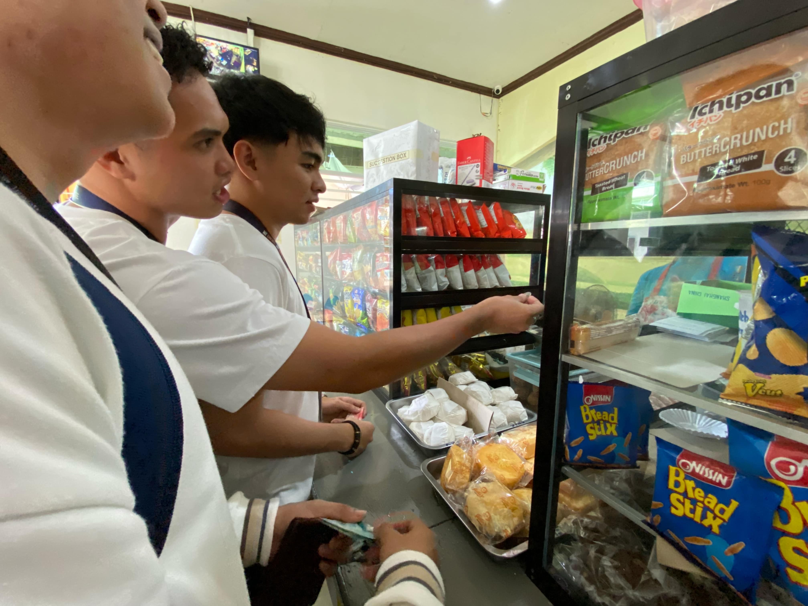

The Canteen Experience
The canteen is where students come together for meals and a brief pause from the day’s hustle. Here’s a simple guide to the process:
-
Buying Food: Start by queuing at the food counter. Choose from a variety of dishes available on the menu, ranging from snacks to full meals. Pay at the cashier before receiving your order.
-
Dining Area: Once you’ve gotten your food, find a seat in the dining area. Enjoy your meal while keeping the space clean and respectful for others.
-
After Care: After finishing your meal, gather your used plates, utensils, and trays. Head to the designated washing area, where plates and trays can be neatly placed for cleaning. Trash should be disposed of in the provided bins.
This simple routine ensures a clean and organized environment for everyone to enjoy.
Canteen Highlights

Food Counter
Choose from a variety of delicious options.
Dining Area
A comfortable space to enjoy your meal.
Trash Can
Keep the canteen clean by throwing your trash properly.